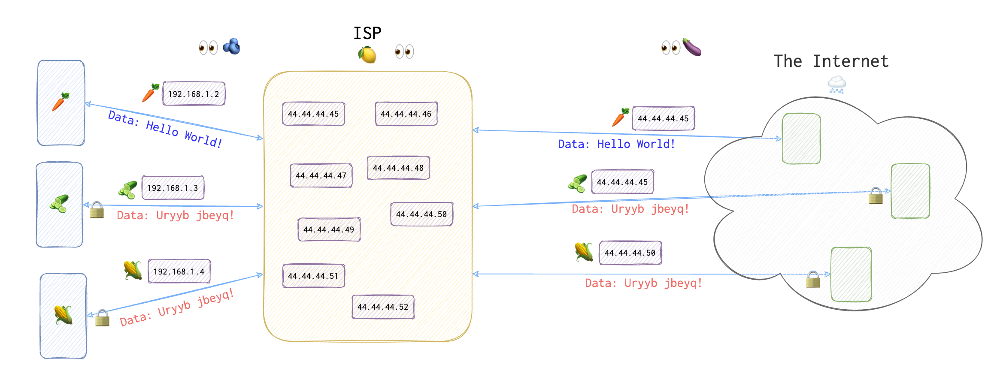
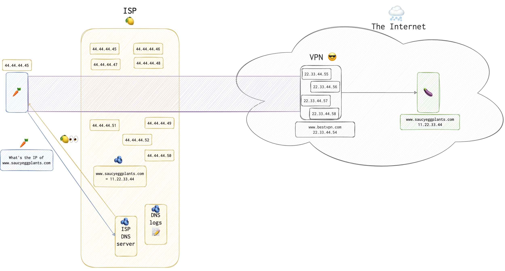
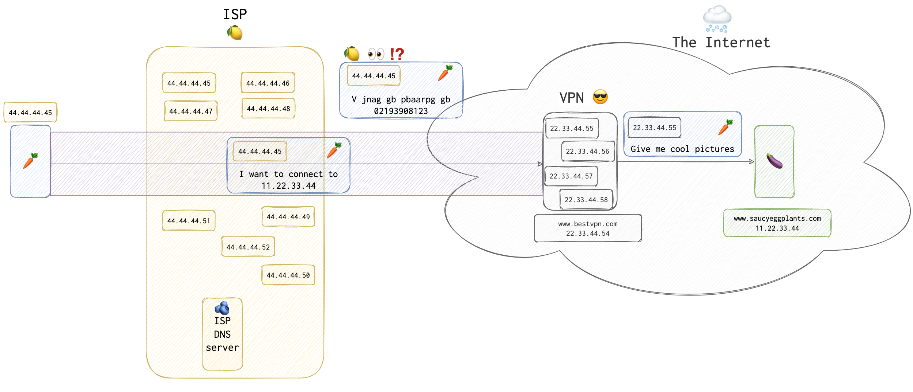

Evasion techniques and what possible forensic footprints they are likely to leave?
VPN
Virtual private network. As an additional bonus - avoid bandwidth throttling (when ISP cuts your speed or bandwidth for certain resources like torrents). Also useful on public networks. VPN is like your representative in the Internet or your avatar.
Below are the two examples of using the Internet without a VPN or any other anonymising tool. The first connection (🥕 marked), is just a simple plaintext HTTP connection. The rest (🥒 and 🌽) show a very simplified HTTPS connection. Basically, ISP 🍋 won’t see the contents of the message with the SSL/TLS (HTTPS) in use, as well as a MiM, of course (both those that are within 👀🫐 and outside 👀🍆 your network).

In order to understand why so, refer to the articles about TLS and SSL and also to the Deffie-Hellman key exchange algorithm (see the Reference section).
Unlike ISPs, the best VPNs don’t keep logs! (c) [1]
❗️ Even with a VPN some webtrackers can grap IP information. Many providers protect the users from this by routing all the DNS requests through their DNS server and are resolved by their special service. You can test for this VPN vulnerbility here - https://dnsleaktest.com/results.html
OpenVPN One of the VPN methods.
L2TP One of the VPN methods.
PPTP One of the VPN methods.
STTP One of the VPN methods.
DNS Leaks
Most of the time, we use domain names (www.saucyeggplants.com) instead of IPs (11.22.33.44) to search for and connect to the resources in the Internet. When we do, before connecting to the server in question, we need to look up its IP. DNS servers are responsible for this: they answer a simple question: what’s the IP of XXXXX?
It’s a good idea since we tend to memorize words better than numbers. However, in case of a VPN connection that could be a problem and here is why.
Suppose a client 🥕 has established a connection with the VPN. Now, 🥕 wants to connect to a pornographic resource banned and illegal in its country (since only naked 🥕 are allowed). 🥕 types www.saucyeggplants.com in the address bar, and the PC the 🥕 uses, looks up this address in 🍋 IPS’s (Internet Provider Service) DNS (domain name service) “book” 📖.

IPS’s DNS server puts this request into logs and looks up for the IP to reply with. Once the IP is found, it’s returned to the 🥕. 🥕 is happy and now uses a secure VPN channel to connect to and communicate with the www.saucyeggplants.com. Do you see a problem here?

Yes, IPS 🍋 can’t see a thing through the encryption blur that the VPN 😎 service has provided for the 🥕. However, the very fact that 🥕 has connected to the 🍆 website can tell a lot. If authorities have a warrant, then they can request IPS logs, including DNS ones. So, even with VPN on 🥕 is in trouble.
❗️ In UK 🇬🇧 DNS log collection and handover is enforced by Investigatory Power Bill.
❗️ Some ISP’s are now using a technology called ‘Transparent DNS proxy’. Using this technology, they will intercept all DNS lookup requests (TCP/UDP port 53) and transparently proxy the results. This effectively forces you to use their DNS service for all DNS lookups (c) [3]
To see how to prevent DNS leak refer to this page.
How does the DNS leak test work? The DNS leak test works by sending your client a series of domain names to resolve within a specific test domain. Each request is sent from your client to your configured DNS server [4]. Not yet sure how exactly it works, since there are recursive and non-recursive DNS queries.
IP spoofing
Source routing
Proxies / Anonymizers
TOR
It’s also called The Onion Router. But why? Remember Shrek talking about ogres and how they have layers comparing them to onions?

I will expand on that later once I have more time. For now, let’s say that a packet is encapsulated multiple times and each server on the route can take one layer only. It’s like a very sophisticated VPN with multiple servers and multiple layers of encapsulation.
TCP fragmentation
Will look like garbage for IDS:
nmap -sS -A -f <target_IP>
References
[1] About Anonymity on the Internet [2] DNS leaks IPs [3] Transparent DNS proxies [4] How DNS leak test work, DNS Leak Test [5] How DNS leak test work, Security Exchange